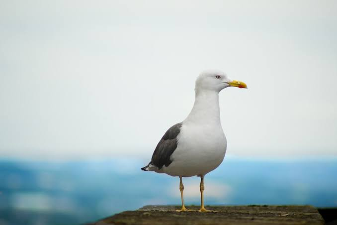

Seagull
Birds
Gulls or seagulls are seabirds of the family Laridae in the suborder Lari. They are most closely related to the terns and only distantly related to auks, skimmers, and more distantly to the waders.
Phylum: Chordata
Family: Laridae
Wingspan: European herring gull: 1.2 – 1.6 m, Great black-backed gull: 1.5 – 1.7 m, Little gull: 61 – 78 cm
Mass: European herring gull: 1 – 1.5 kg, Black-headed gull: 280 g,
Length: European herring gull: 60 – 67 cm,
Clutch size: European herring gull: 2 – 4, Great black-backed gull: 1 – 3, Little gull: 2 – 6, Swallow-tailed gull: 1
Gulls or seagulls are seabirds of the family Laridae in the suborder Lari. They are most closely related to the terns (family Sternidae) and only distantly related to auks, skimmers, and more distantly to the waders.
Until the 21st century, most gulls were placed in the genus Larus, but this arrangement is now considered polyphyletic, leading
to the resurrection of several genera.
An older name for gulls is mews, cognate with German Möwe, Danish måge, Dutch meeuw, and French mouette; this term can still be found in certain regional dialects.
Gulls are typically medium to large birds, usually grey or white, often with black markings on the head or wings. They typically have harsh wailing or squawking calls; stout, longish bills; and webbed feet.
Most gulls are ground-nesting carnivores which take live food or scavenge opportunistically, particularly the Larus species. Live food often includes crabs and small fish.
Gulls have unhinging jaws which allow them to consume large prey. Gulls are typically coastal or inland species, rarely venturing far out to sea, except for the kittiwakes.
The large species take up to four years to attain full adult plumage, but two years is typical for small gulls. Large white-headed gulls are typically long-lived birds, with a maximum age of 49 years recorded for the herring gull.
Biology of Seagull
Description and morphology
Gulls range in size from the little gull, at 120 g (4.2 oz) and 29 cm (11 in), to the great black-backed gull, at 1.75 kg (3.9 lb) and 76 cm (30 in).
They are generally uniform in shape, with heavy bodies, long wings, and moderately long necks. The tails of all but three species are rounded; the exceptions being Sabine's gull and swallow-tailed gulls, which have forked tails, and Ross's gull, which has a wedge-shaped tail.
Gulls have moderately long legs, especially when compared to the similar terns, with fully webbed feet. The bill is generally heavy and slightly hooked, with the larger species having stouter bills than the smaller species.
The bill colour is often yellow with a red spot for the larger white-headed species and red, dark red or black in the smaller species.
The gulls are generalist feeders. Indeed, they are the least specialised of all the seabirds, and their morphology allows for equal adeptness in swimming, flying, and walking.
They are more adept walking on land than most other seabirds, and the smaller gulls tend to be more manoeuvrable while walking. The walking gait of gulls includes a slight side to side motion, something that can be exaggerated in breeding displays.
In the air, they are able to hover and they are also able to take off quickly with little space.
Distribution and habitat
The gulls have a worldwide cosmopolitan distribution. They breed on every continent, including the margins of Antarctica, and are found in the high Arctic, as well.
They are less common on tropical islands, although a few species do live on islands such as the Galapagos and New Caledonia. Many species breed in coastal colonies, with a preference for islands, and one species, the grey gull, breeds in the interior of dry
deserts far from water. Considerable variety exists in the family and species may breed and feed in marine, freshwater, or terrestrial habitats.
Most gull species are migratory, with birds moving to warmer habitats during the winter, but the extent to which they migrate varies by species.
Some migrate long distances, like Franklin's gull, which migrates from Canada to wintering grounds in the south of South America. Other species move much shorter distances and may simply disperse along the coasts near their breeding sites.
Diet and feeding
Charadriiform birds drink salt water, as well as fresh water, as they possess exocrine glands located in supraorbital grooves of the skull by which salt can be excreted through the nostrils to assist the kidneys in maintaining electrolyte balance.
A gull in flight
Gulls are highly adaptable feeders that opportunistically take a wide range of prey. The food taken by gulls includes fish and marine and freshwater invertebrates, both alive and already dead, terrestrial arthropods and invertebrates such as insects and
earthworms, rodents, eggs, carrion, offal, reptiles, amphibians, plant items such as seeds and fruit, human refuse, chips[clarification needed], and even other birds. No gull species is a single-prey specialist, and no gull species forages using only
a single method.
The type of food depends on circumstances, and terrestrial prey such as seeds, fruit, and earthworms are more common during the breeding season while marine prey is more common in the nonbreeding season when birds spend more time on large bodies of water.
Breeding
Gulls are monogamous and colonial breeders that display mate fidelity that usually lasts for the life of the pair. Divorce of mated pairs does occur, but it apparently has a social cost that persists for a number of years after the break-up.
Gulls also display high levels of site fidelity, returning to the same colony after breeding there once and even usually breeding in the same location within that colony.
Colonies can vary from just a few pairs to over a hundred thousand pairs, and may be exclusive to that gull species or shared with other seabird species.
A few species nest singly, and single pairs of band-tailed gulls may breed in colonies of other birds. Within colonies, gull pairs are territorial, defending an area of varying size around the nesting site from others of their species.
This area can be as large as a 5-m radius around the nest in the herring gull to just a tiny area of cliff ledge in the kittiwakes.
Most gulls breed once a year and have predictable breeding seasons lasting for three to five months. Gulls begin to assemble around the colony for a few weeks prior to occupying the colony.
Existing pairs re-establish their pair-bonds, and unpaired birds begin courting. Birds then move back into their territories and new males establish new territories and attempt to court females. Gulls defend their territories from rivals of both sexes through calls and aerial attacks.